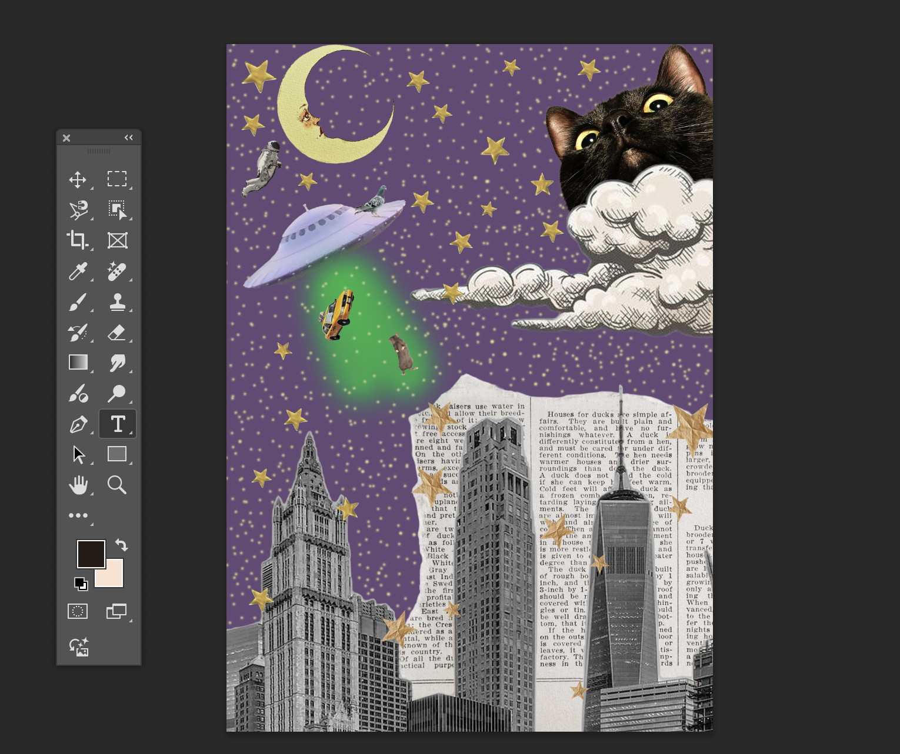
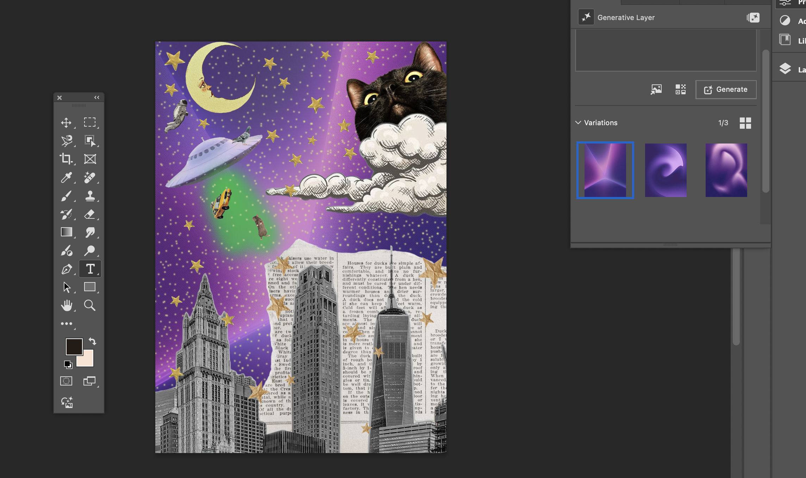
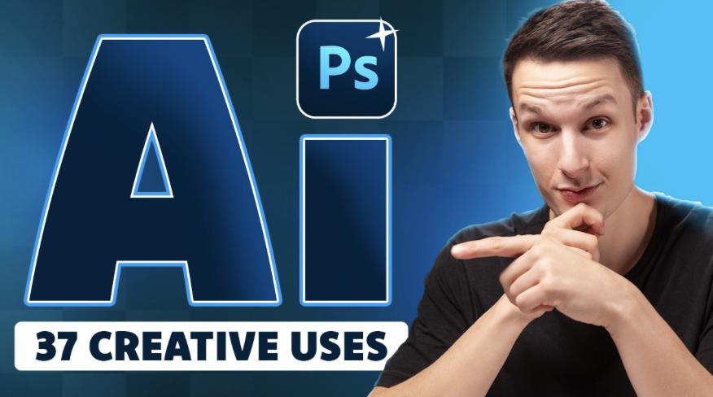

A classic software that every designer should know. The addition of AI tools means
there are now simpler, more efficient ways
to tweak and perfect your own designs.
cmd+cntrl a (mac) or cntrl a (windows)
will select the entire canvas.
Tool #2:Fixing Overexposure
Use the lasso tool to prompt a change in exposure.
“Gloomy sky on rainy day” will work better than simply “darken the sky.”
This is useful too if you want to add clouds or just slightly adjust the sky in an outdoor setting.
Tool #3: Generative Fill
If you have an image where it just feels like something is missing,
prompt the AI to create similar looking objects.
Traditionally, cloning something is a good way to fill in negative space.
But if you want more variation without heavy edits, enter something like
"lush green trees with detailed branches and leaves."
For a collection of 30+ detailed PS AI tutorials, visit:
Things to Remember:
◼ ARTtificial aims to teach how generative fill and tools on Photoshop
can enhance your work.
The promotion of fully generated concepts is not the aim.
Simplifying the design process is the goal.
◼ AI is not perfect. It still needs the designer’s touch.
You may have to go back and clean up inconsistencies the Ai has created.
Blurriness, line warpness, and shadowing and highlgitng mistakes are all very common
errors at this time.
◼ If used for commercial purposes, or as part of a portfolio,
it is encouraged to create parts of a work that uses the help of Ai.
Transparency is important to clients, and it even shows adaptation and skill
to emerging technology.
